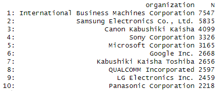
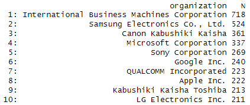
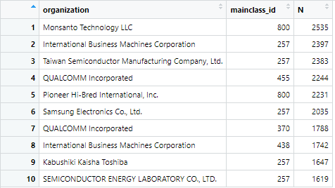

Data Wrangling
1 Libraries
library(tidyverse)
library(vroom)
library(data.table)
library(tictoc)2 Data import for Question 1
Here we need to look up the word file in order to import our data accordingly. The reduced file was used due to some error with the regular data. Both for assignee and patent assignee
col_types <- list(
id = col_character(),
type = col_integer(),
organization = col_character()
)
assignee_tbl <- vroom(
file = "assignee.tsv",
delim = "\t",
col_types = col_types,
na = c("", "NA", "NULL")
)
col_types <- list(
patent_id = col_character(),
assignee_id = col_character()
)
patent_assignee_tbl <- vroom(
file = "patent_assignee.tsv",
delim = "\t",
col_types = col_types,
na = c("", "NA", "NULL")
)3 Convert to data table
Here we used setDT in order to create the data table
setDT(assignee_tbl)
class(assignee_tbl)
setDT(patent_assignee_tbl)
class(patent_assignee_tbl)Check classes afterwards. ## Data Wrangling ## Rename assignee tbl
assignee_tbl %>% setnames("id","assignee_id")
assignee_tbl %>% glimpse4 Merge the data
Align data with “by” function and assignee id.
tic()
combined_data <- merge(x = assignee_tbl, y = patent_assignee_tbl,
by = "assignee_id",
all.x = TRUE,
all.y = FALSE)
toc()
combined_data %>% glimpse()5 Convert patent_id to numeric
combined_data[, ("patent_id") := lapply(.SD, as.numeric), .SDcols = "patent_id"]
str(combined_data)Question 1: Patent Dominance: What US company / corporation has the most patents? List the 10 US companies with the most assigned/granted patents.
Here we use the .N function in order to get the number of rows and sort everything by the type of organization. Afterwards we clean our data and arrange it in descending order and limit our result to 10
patent_dominance <- combined_data[, .N, by = organization]
patent_dominance %>%
na.omit %>%
arrange(desc(N)) %>%
head(10)The results are shown below. 
{kind=link}
Recent patent activity: What US company had the most patents granted in August 2014? List the top 10 companies with the most new granted patents for August 2014.
Import data like before.
col_types <- list(
id = col_character(),
date = col_date("%Y-%m-%d"),
num_claims = col_double()
)
patent_tbl <- vroom(
file = "patent.tsv",
delim = "\t",
col_types = col_types,
na = c("", "NA", "NULL")
)
patent_tbl %>% setnames("id","patent_id")
patent_tbl %>% glimpse()
setDT(patent_tbl)
class(patent_tbl)
class(combined_data)Convert patentid to numeric
patent_tbl[, ("patent_id") := lapply(.SD, as.numeric), .SDcols = "patent_id"]
str(combined_data)
patent_tbl %>% glimpseMerge the data and create new columns for year,month and day so we can filter our results by it.
combined_data_2 <- combined_data[patent_tbl, on = "patent_id"] %>%
separate(
col = "date",
into = c("year", "month", "day"),
sep = "-",
remove = TRUE)
combined_data_2 %>% glimpse()
class(combined_data_2)
setDT(combined_data_2)Calculate the number of new patents for august.
patent_dominance_august_2 <- combined_data_2[month == "08", .N, by = organization]
patent_dominance_august_2 %>%
na.omit %>%
arrange(desc(N)) %>%
head(10)The results are shown below. 
{kind=link}
Question 3: What is the most innovative tech sector? For the top 10 companies (worldwide) with the most patents, what are the top 5 USPTO tech main classes?
Import uspc data.
col_types <- list(
patent_id = col_character(),
mainclass_id = col_character(),
sequence = col_integer()
)
uspc_tbl <- vroom(
file = "uspc.tsv",
delim = "\t",
col_types = col_types,
na = c("", "NA", "NULL"))
Set to data table
setDT(uspc_tbl)
class(uspc_tbl)Merge the data once again. Mainclassid as numeric so we can filter by it later on.
combined_data_3 <- combined_data_2[uspc_tbl, on = "patent_id"]
combined_data_3[, ("mainclass_id") := lapply(.SD, as.numeric), .SDcols = "mainclass_id"]
clasS(combined_data_3)
Use the data table in order to filter by organization and mainclass id. Clean the data afterwards and show the results in descending order.
tic()
patent_dominance_by_uspc <- combined_data_3[, .N, by = .(organization, mainclass_id)] %>%
na.omit %>%
unique() %>%
arrange(desc(N)) %>%
head(10)
toc()
patent_dominance_by_uspc
The results are shown below. 
{kind=link}
The main mainclass_ids are: 800,257,455,370,438.